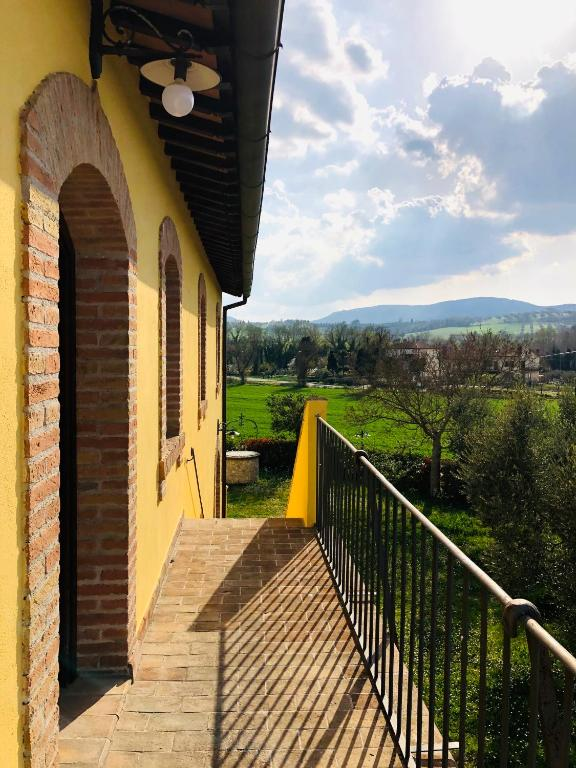

Una raccolta di posti in cui ho soggiornato davvero e che sceglierei di nuovo. Appartamenti, guest house, camping e strutture che hanno reso più bello — o semplicemente più facile — il viaggio.
Qui non trovi una lista infinita di alloggi. Ci sono solo posti che ho provato personalmente e che mi sento davvero di consigliare.
DESTINAZIONE
ITALIA

Umbria · Narni
Casale Viridi
✓ Provato da Fuori MappaLeggi la mia recensione
Una meravigliosa struttura in pietra, in pieno stile umbro, immersa nel verde e nella quiete. Stanze ben organizzate e pulizia impeccabile. Possibilità di fare colazione in struttura con buffet e servizio bar espresso. Proprietaria gentilissima.
In pieno centro, con tutti i servizi vicini e una bellissima vista sulle montagne. Il proprietario è gentilissimo e molto disponibile e prepara personalmente la colazione al mattino.
Stanze pulite e ben arieggiate. Il proprietario è gentilissimo e disponibilissimo a raccontare la sua città, consigliare cosa vedere e spiegare come muoversi.